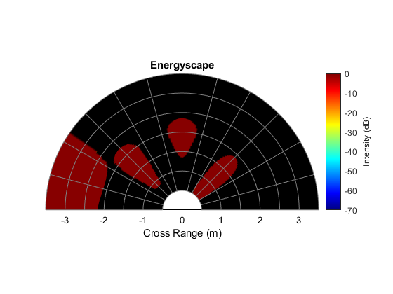

Contents
Setup scene and sensor
structScene = struct();
structScene.targetAzimuth = [0 -45 45 20 -20 70];
structScene.targetElevation = [0 0 0 0 0 0];
structScene.targetRange = [2 1.5 1.8 2.5 2.5 3.0];
structScene.targetStrength = [1 1 1 1 1 1 ];
structScene.speedOfSound = 343;
structSensor = struct();
structSensor.sampleRate = 450e3;
structSensor.emissionSignal = fm_sweep(80e3, 20e3, structSensor.sampleRate, 2, 1, 10);
structSensor.coordinatesEmitter = [0 0 0.05];
structSensor.numSamplesSensor = 15000;
structSensor.coordinatesMicrophones = [0 -0.0384 0.0151; 0 -0.0232 0.0101; 0 -0.0121 0.0164; 0 -0.0046 0.0153; ...
0 -0.0367 0.0054; 0 -0.0144 0.0061; 0 0.0054 0.0011; 0 0.0273 -0.0027; ...
0 -0.0387 0.0001; 0 -0.0281 0.0002; 0 -0.0094 -0.0013; 0 -0.0060 -0.0000; ...
0 -0.0357 -0.0117; 0 -0.0318 -0.0112; 0 -0.0286 -0.0166; 0 0.0029 -0.0086; ...
0 -0.0011 0.0178; 0 0.0067 0.0115; 0 0.0103 0.0144; 0 0.0172 0.0140; ...
0 0.0384 0.0022; 0 0.0283 0.0162; 0 0.0354 0.0125; 0 0.0373 0.0150; ...
0 -0.0084 -0.0047; 0 0.0107 -0.0111; 0 0.0189 -0.0166; 0 0.0363 -0.0101; ...
0 0.0057 -0.0224; 0 -0.0036 -0.0223; 0 0.0315 -0.0161; 0 0.0083 -0.0178];
Setup Energyscape
structEnergyscapeGeneration = struct();
structEnergyscapeGeneration.azimuthResolution = 1;
structEnergyscapeGeneration.lowpassFreq = 5e3;
structEnergyscapeGeneration.doEnvelope = 1;
structEnergyscapeGeneration.decimationFactor = 10;
structEnergyscapeGeneration.matchedFilterMethod = 'Normal';
structEnergyscapeGeneration.matchedFilterFreq = [20e3 80e3];
structEnergyscapeGeneration.doMatchedFilter = 1;
structEnergyscapeGeneration.methodImaging = 'DMAS3';
structEnergyscapeGeneration.coherenceType = 'CF';
structEnergyscapeGeneration.methodProcessing = 'mexcuda';
structEnergyscapeGeneration.sizeFactor = 1.5;
structEnergyscapeGeneration.filterSize = [101, 7];
structEnergyscapeGeneration.dbCut = -60;
structEnergyscapeGeneration.dbMax = 70;
structEnergyscapeGeneration.minRange = 0.5;
structEnergyscapeGeneration.maxRange = 3.5;
structEnergyscapeGeneration.tanhFactor = 1;
Generate microphone data
dataMicrophones = simulateMicrophoneData(structScene, structSensor);
dataMicrophones = dataMicrophones + 0.1 * randn(size(dataMicrophones));
Generate energyscape
structEnergyscape = clait.generate2DEnergyscape(dataMicrophones, structSensor, structEnergyscapeGeneration);
Plot energyscape
colorMapSize = 1024;
gridColor = [0.5 0.5 0.5];
rangeSpacing = 0.5;
azimuthSpacing = 15;
cmap = jet(1024);
figure;
[energyscapePlotHandle, energyscapeColorBarHandle] = clait.plot2DEnergyscape(structEnergyscape, colorMapSize, cmap, gridColor, rangeSpacing, azimuthSpacing);
drawnow;
title("Energyscape")

Helper functions
function dataMicrophonesOut = simulateMicrophoneData( structScene, structSensor )
[ pointsX, pointsY, pointsZ ] = sph2cart( deg2rad( structScene.targetAzimuth ), deg2rad( structScene.targetElevation ), structScene.targetRange );
targetsCartesian = [ pointsX ;pointsY ;pointsZ ]';
numTargets = length( structScene.targetAzimuth );
numChannels = size( structSensor.coordinatesMicrophones, 1 );
dataMicrophones = zeros( structSensor.numSamplesSensor, numChannels );
for cntTarget = 1 : numTargets
rangesToTarget = sqrt( sum(( structSensor.coordinatesEmitter - targetsCartesian( cntTarget, : ) ).^2, 2 ) );
rangesFromTarget = sqrt( sum(( structSensor.coordinatesMicrophones - targetsCartesian( cntTarget, : ) ).^2, 2 ) );
totalRanges = rangesToTarget + rangesFromTarget;
totalTimeInSamples = round( totalRanges / structScene.speedOfSound * structSensor.sampleRate );
for cntChannel = 1 : numChannels
curSample = totalTimeInSamples( cntChannel );
dataMicrophones( curSample, cntChannel ) = dataMicrophones( curSample, cntChannel ) + structScene.targetStrength( cntTarget );
end
end
dataMicrophonesOut = zeros( size( dataMicrophones ) );
for cntChannel = 1 : numChannels
dataMicrophonesOut( :, cntChannel ) = dataMicrophones( :, cntChannel ) + conv( dataMicrophones( :, cntChannel ), structSensor.emissionSignal, 'same' );
end
end
function sig=fm_sweep(f_start,f_end,fs,duration, amplitude, winprct)
ms = 10^-3;
duration = duration * ms;
t = 0:1/fs:duration;
ft = 1./(1/f_start + t * (1/f_end - 1/f_start) / duration);
sig = amplitude * (sin(2*pi*(duration/(1/f_end-1/f_start)) * (log(1/f_start+t*(1/f_end-1/f_start)/duration) - log(1/f_start))));
length_win = round(length(sig)*2*winprct/100);
window_short = hanning(length_win);
window_on = window_short(1:ceil(length_win/2));
window_off = window_short(ceil(length_win/2) + 1 : end);
window = ones(1,length(sig));
window(1:length(window_on)) = window_on;
window(end-length(window_off) + 1 : end) = window_off;
sig = sig .* window;
end
function [mat_out] = normLog(mat_in,threshDB)
thresh = 10^(threshDB/20);
mat_out = mat_in / max(max(max(max(mat_in))));
mat_out( mat_out < 0 ) = 0;
mat_out = 20*log10( mat_out + thresh);
end